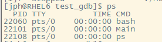
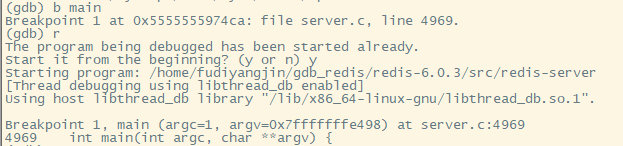
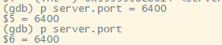
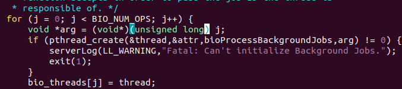

gdb调试过程
makefile与CMake
一般使用makefile文件组织大型C/C++或者含有多个C/C++文件的项目，有人认为makefile不太方便，于是发明了CMake。CMake将含有CMake指令的文件生成makefile文件，含有CMkae指令的文件的名称一般是CMakeLists.txt，使用CMake是在实际开发中组织和管理C/C++项目的常用方式。
gdb调试
gdb调试方法
- 直接调用目标程序
1 | gdb filename |
- attach到进程
当一个程序已经启动，但又不想重启这个程序时，可以利用gdb attach程序的进程ID将gdb调试器attach到正在启动的程序上。
首先利用ps查看PID号

发现刚才挂载到后台的Main程序正在运行，并且PID号为22101，利用gdb attach 22101把gdb attach到Main的进程上。
会有很多无关的信息，其中注意到显示 Attaching to process 22101 这代表已经连入目标进程中了。
利用gdb调试Redis
- gdb常用调试命令概览和说明
| 命令名称 | 命令缩写 | 命令说明 |
|---|---|---|
| run | r | 运行一个程序 |
| continue | c | 让暂停的程序继续运行 |
| break | b | 添加断点 |
| tbreak | tb | 添加临时点 |
| backtrace | bt | 查看当前线程的调用堆栈 |
| frame | f | 切换到当前调用线程的指定堆栈 |
| info | info | 查看断点、线程等信息 |
| enable | enable | 启用某个断点 |
| disable | disable | 禁用某个断点 |
| delete | del | 删除断点 |
| list | l | 显示源码 |
| p | 打印或修改变量、寄存器的值 | |
| ptype | ptype | 查看变量的类型 |
| thread | thread | 切换到指定的线程 |
| next | n | 运行到下一行 |
| step | s | 如果有调用函数则进入调用的函数内部，相当于step into |
| until | u | 运行到指定行停下来 |
| finsih | fi | 结束当前调用函数，到上一层函数调用处 |
| return | return | 结束当前调用函数并返回指定的值，到上一层函数调用处 |
| jump | j | 将当前程序的执行流跳转到指定的行或地址 |
| disassemble | dis | 查看汇编代码 |
| set args | 设置程序启动命令行参数 | |
| show args | 查看设置的命令行参数 | |
| watch | watch | 监视某个变量或内存地址的值是否发生了变化 |
| display | display | 监视的变量或者内存地址，在程序中断后自动输出监控的变量或内存地址 |
| dir | dir | 重定向源码文件的位置 |
- gdb调试Redis准备工作
下载redis源码
解压
1 | tar zxvf redis-6.0.3.tar.gz |
进入redis-6.0.3目录并使用makefile进行编译，为了方便调试，需要生成调试符号并关闭编译器优化选项。
1 | cd redis-6.0.3 |

1 | make MALLOC=libc CFLAGS="-g -O0" -j 4 |
进入src目录，利用gdb启动redis-server
1 | gdb redis-server |
- run命令
输入run可运行程序
Ctrl + C可以中断，再次输入r会提示是否重启，输入y确认重启。
- continue命令
Ctrl+C中断后，可利用continue让程序继续运行
- break命令
break可以添加断点，添加断点的方式：
1 | //在functionname函数入口处添加一个断点 |
利用main函数名称设置断点：

利用vim命令模式的指令，set number 和/bind + n 组合查找bind函数
将断点打到455行
利用run指令重启程序，会在main函数触发第一次断点，输入continue触发刚设置的第二个断点。
程序现在停到了anet.c的455行，通过list查看源码，将return语句设置成断定，看函数执行完毕后走到哪个return语句退出。
利用continue命令继续运行程序
程序执行到了466行，可以发现程序bind和listen均已调用成功。
可以看到redis-server的6739端口已经成功开启了监听。
- tbreak命令
threak相当于添加了一个临时断点，该断点一旦触发就会被自动删除。
利用threak命令在main函数处添加了一个临时断点，第一次run命令触发断点后，再次重新运行程序，不再触发断点。
- backtrace与frame命令
backtrace指令用于查看当前所在线程的调用堆栈。
当程序中断在anet.c文件第466行时，通过backtrace命令查看当前的调用堆栈，发现一共有6层堆栈，编号为#0~#5，顶层是main函数，底层是anetListen函数。
frame命令可以切换到其他堆栈处，frame 堆栈编号（编号不加#）
利用frame命令一次切换堆栈可以发现其中的层级关系，最上层main函数在5128行调用了initServer函数，initServer在2792行调用了listenToPort函数，listenToPort在2648行调用了anetTcp6Server函数，anetTcp6Server函数在524行调用了_anetTcpServer函数，_anetTcpServer函数在501行调用了anetListen函数，当前断点正好位于anetListen函数中。
- info break、enable、disable、delete命令
info break命令可以查看加了有那些断点
disable 断点编号 能够禁用这个断点， enable 断点编号 能够使断点重新开启，不加编号时代表全部断点
delete 断点编号 可以删除某断点，不加编号时代表全部断点。
- list命令
list命令可以查看断点附件的10行代码，list+向下10行，list-向上10行
- print与ptype
print命令可以在调试过程中查看变量的值，也可以修改当前内存中的变量值。
切换到堆栈4后，分别打印了server.port、server.ipfd、server.ipfd_count的值。其中，server.ipfd显示{0<repeats 16 times>}，这是gdb显示字符串和字符数组的特有方式，当一个字符串变量、字符数组或者连续的内存值重复若干次时，gdb就会以这种模式显示，以解决显示空间。
print可以输出多种类型的值，比如print &server.port输出server.port的地址；打印多个变量的相加值；print func()输出该变量的执行结果；某一时刻的错误码也可以利用print strerror(errno)将错误信息打印出来
print也可以修改变量的值

ptype命令可以输出一个变量的类型。
server变量是个结构体，并且详细罗列了每个成员的变量类型和字段名。
- info与thread命令
info命令可以用来查询当前进程中所有线程的运行情况
redis-server正常启动后一共产生了4个线程，1个主线程3个工作线程。2、3、4线程分别阻塞在futex_wait_cancelable处，主线程1阻塞在epoll_wait处。前面的*号代表gdb当前作用于哪个线程。 thread 编号 可以切换到指定线程
info args命令可以用来查看当前函数的参数值
先切回了主线程1，然后再回到堆栈2，堆栈2调用的函数是aeProcessEvents，这个函数有两个参数，分别是eventLoop和tvp，使用info args可以查看这两个函数的值，ebentLoop里存的是个地址，用print 解地址符打印
- next、step、until、finish、return、jump命令
next命令可以让程序跳到下一行
gdb命令行界面直接回车会默认执行最近的一条指令，因此输入next指令后按回车就可以一直执行next命令。
step命令可以进入函数内部。
finsh命令用于执行完整的函数体，然后正常返回上一层的调用中。
return命令则在当前函数还有剩余代码未执行完毕时也不会再执行了。
until命令可以让程序运行到指定的行停下来。
jump命令 会让程序执行流跳转到指定的位置执行
- disassemble命令
disassemble命令 会输出当前函数的汇编指令。
- watch命令
watch命令 可以用来监视一个变量或者一段内存，当这个变量或者该内存处的值发生变化时，gdb就会中断。
整型变量：
1 | int i; |
指针类型：
1 | char *p; |
监视一个数组或内存区间:
1 | char buf[128]; |
- display命令
dislpay命令 用于监视变量或者内存的值，每次gdb中断都会自动输出被监视变量或内存的值。
info dislpay 查看当前已经监视了哪些值， delete display 清除全部被监视的变量， delete display 编号 移除对指定变量的监视。
- dir命令
使用gdb调试时，生成可执行文件的机器和实际执行该可执行程序的机器不是同一台机器。这时如果可执行程序崩溃，利用gdb调试core文件时，gdb会提示“No such file or directory”
gcc/g++编译出来的可执行程序并不包含完整的源码，-g只是加了一个可执行程序与源码之间的位置映射关系，这时可以利用dir命令重新定位这种关系。
1 | dir SourcePath1:SourcePath2:SourcePath3 |
使用gdb调试多线程程序
- 调试多线程程序的方法
利用 info threads命令 查看当前进程有多少线程:
使用 thread 线程编号 可以切换到对应的线程，任何使用backtrace命令查看对应的线程从顶层到底层的函数调用，然后再利用 frame 编号 切换到当前函数调用堆栈的任何一层函数调用中，最终利用print或单步调试了解函数大致逻辑。
可以看到顶层是main函数，说明1号线程是程序的主线程，通过main往下各个函数调用对应的源码位置，可以学习研究调用处的逻辑。
切换到2线程

clone和start_thread是系统函数，则bioProcessBackgroundjobs是2号线程的线程函数

通过vim查找bioProcessBackgroundJobs发现函数在bioInit中被调用，
给biolnit打上断点并查看堆栈
2号线程在main函数中调用了InitServerLast函数，然后调用了bioInit，根据上面的分析，在biolnit中又创建了新的线程bioProcessBackgroundJobs。
使用gdb调试多进程程序
多进程程序是指一个进程使用Linux系统调用fork函数产生的子进程。
- 方法1
先在命令行中用gdb调试父进程，等子进程被fork出来后再开一个命令行窗口使用gdb attac命令将gdb attach到子进程上。先安装Nginx
1 | wget http://nginx.org/download/nginx-1.18.0.tar.gz |
解压编译安装不再赘述
启动Nginx：
1 | cd /usr/local/nginx/sbin |
Nginx默认开启了两个进程，如图主进程号是2188，子进程号是2189。attach到主进程。
利用backtrace查看堆栈
frame 1切换到调用堆栈#1，Nginx的父进程挂起在src/os/unix/ngx_process_cycle.c:164
使用continue使程序继续运行，再开个窗口连接子线程
利用backtrace查看堆栈
子进程挂起在src/event/modules/ngx_epoll_moddule.c:800的epoll_wait函数处，在epoll_wait函数返回后加一个断点，然后使用continue命令让Nginx子进程继续运行，接着在浏览器访问Nginx网站（IP:80)
回到调试界面发现断点被触发，backtrace查看当前调用堆栈
使用info threads查看子进程的所有线程信息，发现Nginx只有一个主线程
Nginx父进程不处理客户端的请求，处理客户端请求的逻辑在子进程中，当单个子进程的客户端请求数达到一定数量时，父进程会重新fork一个新的子进程来处理客户端的请求，也就是说子进程可以有多个。
- 方法2
gdb调试器提供了一个follow-fork选项，通过set follow-fork mode设置一个进程fork出新的子进程，gdb是继续调试父进程（取值parent）还是继续调试子进程（取值child）
1 | set follow-fork child |
利用set follow-fork child切换到子进程重新执行run命令和backtrace命令发现gdb确实attach进了子进程。